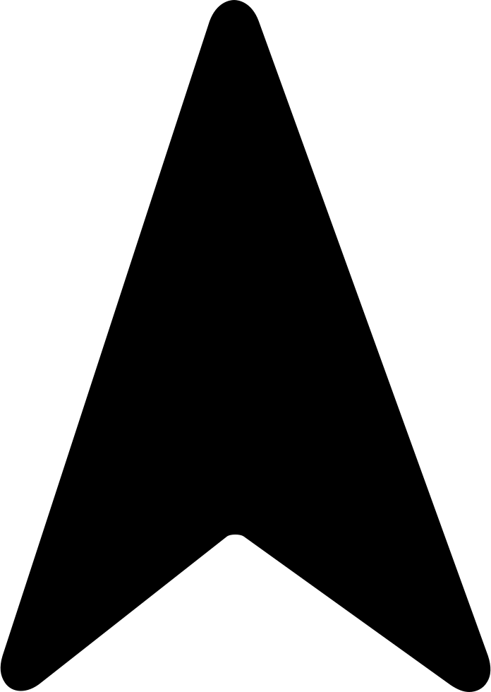

°C
météo
météo instantané - // - :

Ressenti
°C

Humidité
%

Vent -
km/h
Visibilité
km
lever du soleil / coucher du soleil

Lever du soleil
Coucher du soleil
lever de la lune / coucher de la lune

Lever de la Lune
Coucher de la lune
.
.
polution de l'air à
Monoxyde de carbone :
Monoxyde d'azote :
Dioxyde d'azote :
Ozone :
Dioxyde de soufre :
Particule fine (< 2,5 µm) :
Particule < 10 µm :
Ammoniac :
Np: les valeurs ci-dessus représente la concentration actuel des gazs poluants. L'indice de polution est calculé en fonction du dioxyde d'azote, des particule PM10 ainsi que de l'ozone.